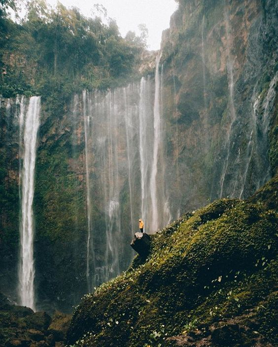
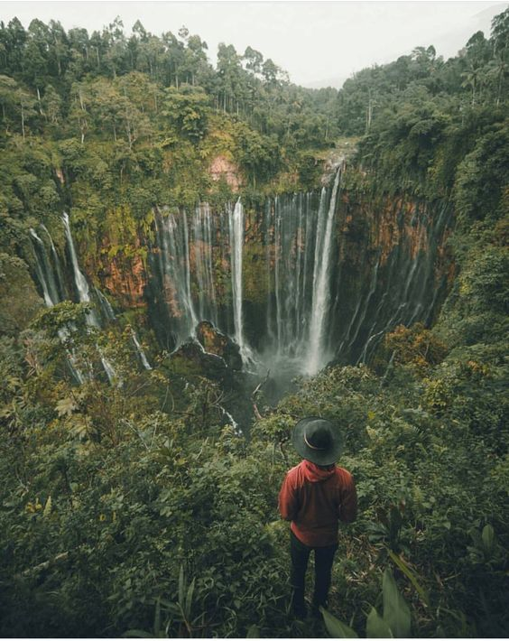

Air Terjun Tumpak Sewu



| Desa Sidomulyo, Kecamatan Pronojiwo, Kabupaten Lumajang, Provinsi Jawa Timur | Air Terjun Tumpak Sewu atau disebut juga Coban Sewu adalah sebuah air terjun berketinggian sekira 120 meter. Air Terjun Tumpak Sewu merupakan air terjun terindah di Pulau Jawa dan Indonesia. Air Terjun Tumpak Sewu memiliki formasi unik karena memiliki aliran air yang melebar seperti tirai sehingga termasuk dalam tipe air terjun Tiered. Lokasi Air Terjun Tumpak Sewu ada di dalam sebuah lembah curam memanjang dengan elevasi 500 meter di atas permukaan air laut. Air Terjun Tumpak Sewu terbentuk di aliran Sungai Glidih yang berhulu di Gunung Semeru. |